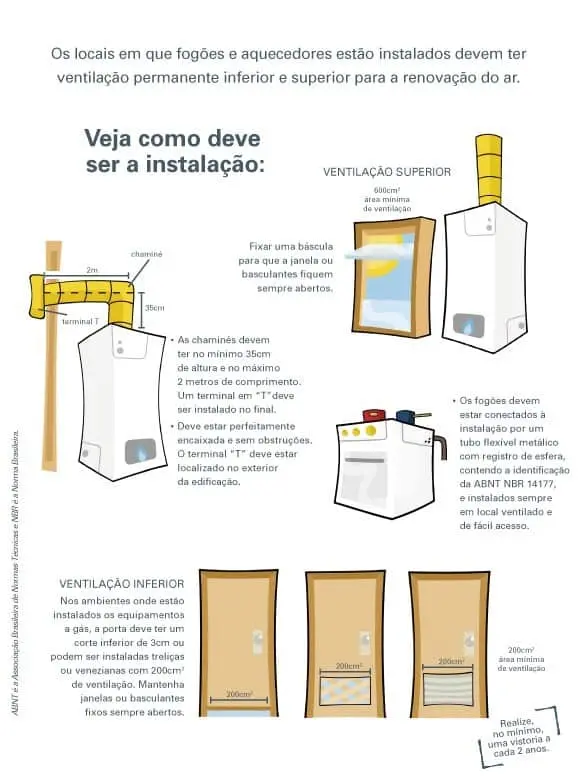

É muito comum vermos nas residências familiares ainda o uso de botijões de gás, na maioria das vezes dentro da própria cozinha, próximo ao fogão. Essa prática, ainda que recorrente, não é indicada visto que o gás pode ser extremamente perigoso para aqueles que estão ao seu redor.
A instalação inadequada desse tipo de sistema, seja na cozinha quanto para os demais cômodos é um risco tanto no ponto de vista da segurança pessoal quanto para a economia do usuário. Todavia certas medidas podem ser tomadas para otimizar isso, como por exemplo um projeto de instalação de gás devidamente planejado e de acordo com as normas vigentes.
Dentre as normas que devem ser respeitadas no procedimento de instalação de gás em restaurantes estão a do Corpo de Bombeiros Estadual e as da ABNT – Associação Brasileira de Normas Técnicas. Além disso, a área destinada para a central deve constar na planta baixa do projeto. Sempre considerando a planta do seu imóvel e a localização da cozinha. Os recipientes de GLP devem ser situados no exterior das edificações, em locais ventilados. Além disso, é importante saber que é proibida a instalação de gás GLP em ambientes totalmente vedados. A exemplo estão os porões, garagens subterrâneas e forros, entre outros.